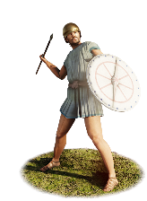
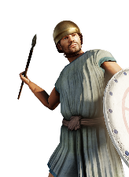

RTR: Imperium Surrectum
RTR: Imperium SurrectumEtruscan Javelinmen


Class: missile · Category: infantry · Men per unit: 40
Description
"When the others refused their offer and chose the death befitting men of noble birth, the Tyrrhenians renewed the struggle, attacking them in relays [...] standing in a body and hurling javelins and stones at them from a distance; and the multitude of missiles was like a snow-storm." – Dionysius of Halicarnassus (Roman Antiquities 9.21.3)
Levied from the lower census classes of the Etruscan city-states, these Etruscan Javelinmen serve as effective light skirmishers. Their main tasks are to shield friendly formations, pelting enemy units from a safe distance, or to conduct ambushes. Not being burdened by heavy armour, these soldiers wear simple short tunics, sometimes held up by a stomach belt or girdle (called ‘cinctus’), which can also hold spare javelins. While some are able to afford varieties of the Montefortino-type helmet (a simple bowl-like type), most do not wear anything on their heads. For defense, Etruscan Javelinmen carry a small parma type round shield, allowing them to remain fast and agile. They enter battle armed with a bundle of javelins (pila or darts) and carry a sidearm knife as last resort when the battle reaches them. Positioned outside the main line of battle, these men excel at harassing advancing infantry and guarding army flanks, though their lack of body armour and low morale means that they will rout quickly when caught in melee or when charged by enemy cavalry.
Historical background
Etruria, usually referred to in Greek and Latin source texts as Tyrrhenia, was a region of Central Italy, located in an area that covered part of what are now Tuscany, Latium, Emilia-Romagna, and Umbria. The ancient people of Etruria are labelled Etruscans, and their complex culture was centred on numerous city-states that rose during the Villanovan period in the ninth century BC and rose to great power during the Orientalising (700–600 BC.) and Archaic (700–480 BC) periods.
Light missile infantry played an important role in Etruscan warfare from the Archaic period through the Hellenistic era. Ancient historians note the reliance of Etruscan commanders on massed missile troops; during the early conflicts against Rome, such as the battle at the Cremera (477 BC), referred to at the start of this description, in which the Tyrrhenian forces (‘Tyrrhenoi’ – as they were called by the Greeks) used javelin throwers and stones to weaken the Roman formations under a "snow-storm" of missiles. In the socio-military structure of central Italy, similar to the Roman organisation, skirmishing duties fell to the lower property classes (specifically the fourth and fifth classes), who lacked the financial means to purchase expensive bronze cuirasses or full hoplite panoplies. Following the conquest and subjection of Etruria during the Middle Roman Republic (300–100 BC), Etruscan cities served as subordinate allies (socii) obliged to supply military contingents to the Roman army under the formula togatorum. This was a list maintained by the Romans for the purpose of determining the annual military contributions of their Italian allies (Baronowski, ‘The “Formula Togatorum”’, in: Historia: Zeitschrift Für Alte Geschichte 33-2 (1984), pp. 248-252).
In Roman field armies, lower-class Etruscan skirmishers fought alongside Roman citizen velites, adopting elements of the standardised Roman panoply while retaining some distinct regional elements. Indeed, Taylor tells us that Etruscan "infantrymen were displayed in Roman-style kit, although some were represented wearing select pieces of armour that had been part of the traditional Etruscan panoply (itself heavily influenced by Greek fashions), a sort of martial hybridity" (Taylor, ‘Etruscan Identity and Service in the Roman Army: 300–100 B.C.E.’, in: American Journal of Archaeology 121-2 (2017), pp. 275-292).
Archaeological finds reveal further information about Etruscan skirmishers: a third-century BC bronze votive figurine from northern Etruria depicts a light skirmisher wearing a soft cap or hood, carrying a small oval scutum with a vertical barleycorn spine, and with his sword on the right side (Villa Giulia inv. 24497 in: Taylor [2017]). Furthermore, the 4th-century BC beautiful wall paintings from the Giglioli Tomb at Tarquinia also depict bundles of heavy javelins (pila), illustrating their manufacture and usage in Etruria. The manufacturing capacity of the Etruscan cities to supply light missile units remained vast, as shown during Scipio's African expedition in the Second Punic War (205 BC), where the city of Arretium alone provided the Roman army with over 50,000 darts, javelins, and spears. Livy tells us that when Scipio was preparing his invasion of Africa, he “was given liberty to accept any materials contributed by the allies for the construction of his ships. The cantons of Etruria were the first to promise assistance, each according to its means. Caere contributed corn and provisions of all kinds for the crews; Populonia, iron; Tarquinii, cloth for the sails; Volaterrae, timber for the hulls and corn; Arretium, 3,000 shields and as many helmets, whilst they were ready to supply as many as 50,000 darts, javelins and long spears. They also offered to furnish all the axes, spades, sickles, gabions and hand-mills required for forty warships as well as 120,000 pecks of wheat and provision for the sailing-masters and the rowers on the voyage” (Livy 28.45.15–6).
Stats
| Rank in roster | Rank in roster | Rank in roster | Rank in roster | ||||||||
|---|---|---|---|---|---|---|---|---|---|---|---|
| Men per unit | 40 | ███······· 28% | Attack | 9 | █········· 14% | Charge bonus | 1 | █········· 4% | Defence | 12 | █········· 4% |
| · armour | 1 | █········· 0% | · defence skill | 10 | █········· 5% | · shield | 1 | ███······· 25% | Morale | 4 | █········· 0% |
| Discipline | low | Training | untrained | Recruitment cost | 733 dn | █········· 1% | Upkeep per turn | 268 dn | █········· 7% | ||
| Turns to recruit | 2 |
Weapons
| Primary | Secondary | Primary | Secondary | Primary | Secondary | Primary | Secondary | ||||
|---|---|---|---|---|---|---|---|---|---|---|---|
| Attack | 9 | 3 | Charge bonus | 1 | 1 | Type | thrown · archery | melee · simple | Damage | piercing | piercing |
| Projectile | javelin | — | Range | 60 | — | Ammunition | 7 | — | Attributes | thrown | — |
| Min delay between blows | 25 | 25 |
Defence
| Primary | Secondary | Primary | Secondary | Primary | Secondary | Primary | Secondary | ||||
|---|---|---|---|---|---|---|---|---|---|---|---|
| Total | 12 | — | Armour | 1 | — | Defence skill | 10 | — | Shield | 1 | — |
| Material | flesh | — |
Condition, terrain and upkeep
| Hit points | 1 · mount 6 | Ground: scrub / sand / forest / snow | 8 / 0 / 8 / 0 | Heat penalty | 0 | Charge distance | 30 |
| Fire delay | 0 | Food consumed (low / high) | 60 / 300 | Mass per man | 0.84 | Formation: close / loose | 1.1 x 2.6 / 1.98 x 4.68 · 5 ranks · square |
| Men per unit | 40 as the unit file states — the game multiplies this by your unit size |
In battle: Very good stamina
The full attribute list (3)
sea_faring, hide_forest, very_hardy
Who can recruit it
A core roster unit for one faction, which can raise it anywhere it holds the right building:
Any faction holding one of the provinces below can field it.
Exactly what a settlement must have, route by route (4)
| Building | Also requires | Building | Also requires | Building | Also requires | Building | Also requires |
|---|---|---|---|---|---|---|---|
| Indirect Rule | Garrison Building or Tier 1 Military Industrial Complex · Tier 1 Colony | Direct Rule | Garrison Building or Tier 1 Military Industrial Complex · Tier 1 Colony | Homeland | Garrison Building or Tier 1 Military Industrial Complex | Region Information Scroll | Garrison Building or Tier 1 Military Industrial Complex · Etruscan area of recruitment · Any Government (Dependency, Indirect Rule or Direct Rule) | Tier 2 Colony not built |
Areas of recruitment

| Zone | Provinces | ||||||
|---|---|---|---|---|---|---|---|
| Etruscan | 8 |